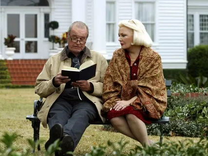
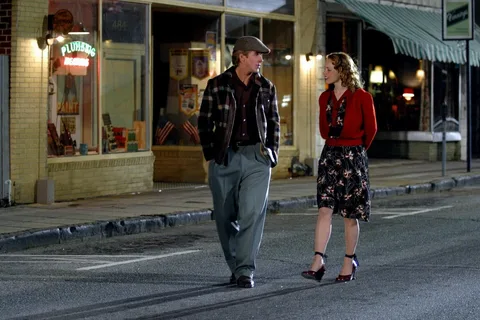
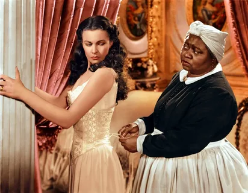
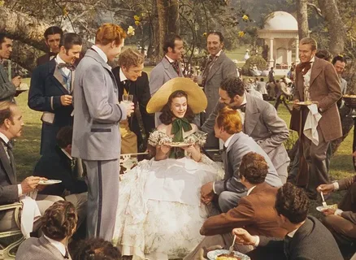
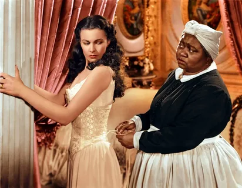
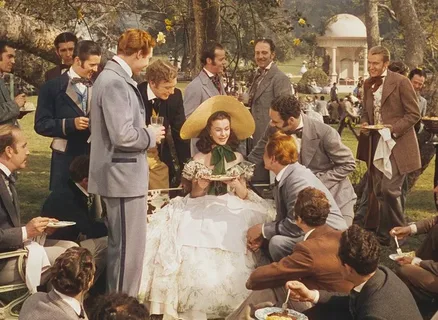
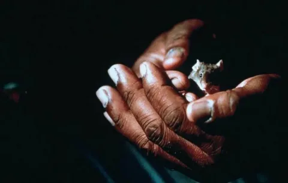
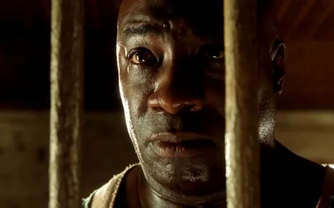
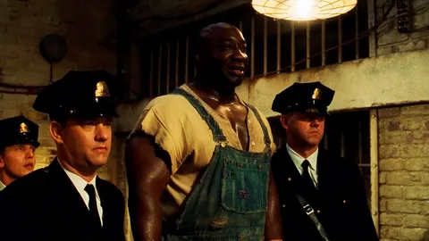

Мои любимые фильмы
Список фильмов
Дневник памяти (The Notebook)
Краткое содержание:Эта трогательная история любви рассказывает о непростой судьбе Ноя и Элли, чьи отношения проходят через испытания времени и обстоятельств, но остаются сильными до конца их жизни.
| Год | Страна | Жанр | Режиссер |
|---|---|---|---|
| 2004 | США | Драма, Мелодрама | Ник Кассаветис |


Унесённые ветром (Gone with the Wind)
Краткое содержание:Эпическая драма, разворачивающаяся на фоне Гражданской войны в США, повествует о любви и страданиях Скарлетт О'Хара, чья жизнь меняется под воздействием трагических событий и ее непоколебимого характера.
| Год | Страна | Жанр | Режиссер |
|---|---|---|---|
| 1939 | США | Драма, Исторический | Виктор Флеминг |
 



Зелёная миля (The Green Mile)
Краткое содержание:Фильм рассказывает историю охранника тюрьмы Пола Эджкомба, который сталкивается с необычным заключенным Джоном Коффи, обладающим мистическими способностями и изменяющим жизнь всех, кто с ним соприкасается.
| Год | Страна | Жанр | Режиссер |
|---|---|---|---|
| 1999 | США | Драма, Фэнтези | Фрэнк Дарабонт |


